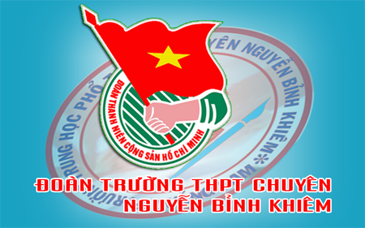

Hướng dẫn thực hiện Điều lệ Đoàn TNCS Hồ Chí Minh

Lần cập nhật cuối lúc Thứ năm, 29 Tháng 8 2019 13:57 Viết bởi Administrator Thứ bảy, 07 Tháng 9 2013 08:30
Căn cứ Điều lệ Đoàn TNCS Hồ Chí Minh do Đại hội đại biểu toàn quốc lần thứ X của Đoàn thông qua ngày 12/12/2012, Ban Thường vụ Trung ương Đoàn hướng dẫn toàn Đoàn thực hiện đúng và thống nhất Điều lệ Đoàn như sau:

PHẦN THỨ NHẤT
NHỮNG VẤN ĐỀ VỀ ĐOÀN VIÊN
I- VỀ KẾT NẠP ĐOÀN VIÊN
1- Điều kiện độ tuổi và trình độ học vấn
a) Tại thời điểm xét kết nạp, người được kết nạp vào Đoàn tuổi từ 16 (từ đủ 15 tuổi + 1 ngày) và không quá 30 tuổi.
b) Người được kết nạp vào Đoàn tối thiểu có trình độ tiểu học. Đối với thanh niên là người dân tộc thiểu số, người đang sinh sống ở vùng cao, vùng sâu, vùng xa, vùng kinh tế - xã hội đặc biệt khó khăn thì vận dụng linh hoạt.
2- Xét kết nạp đoàn viên trong một số trường hợp
a) Trường hợp thanh niên có nguyện vọng vào Đoàn, hăng hái tham gia các hoạt động do Đoàn tổ chức, có tín nhiệm với thanh niên, nhưng có bố mẹ, anh, chị, em ruột đang bị giam giữ, trước khi xét kết nạp phải xin ý kiến của cấp ủy đảng cùng cấp.
b) Trường hợp thanh niên làm việc trong các cơ quan, đơn vị, doanh nghiệp chưa có tổ chức Đoàn, hăng hái tham gia các hoạt động do Đoàn tổ chức ở nơi cư trú, có tín nhiệm với thanh niên và có nguyện vọng vào Đoàn thì chi đoàn nơi cư trú xét, đề nghị, ban chấp hành Đoàn xã, phường, thị trấn ra quyết định chuẩn y kết nạp.
3- Thủ tục kết nạp đoàn viên
3.1- Thanh niên vào Đoàn TNCS Hồ Chí Minh tự nguyện viết đơn, báo cáo lý lịch của mình với chi đoàn, chi đoàn cơ sở.
3.2- Được học Điều lệ Đoàn và trang bị những kiến thức cơ bản về Đoàn trước khi kết nạp.
3.3- Được một đoàn viên hoặc một đảng viên (với những nơi chưa có tổ chức Đoàn) giới thiệu. Đoàn viên hoặc đảng viên giới thiệu phải là người cùng công tác, lao động hoặc học tập với người được giới thiệu ít nhất 3 tháng liên tục.
Nội dung chi tiết kích vào đây để tải về
- 22/11/2021 17:09 - Đoàn trường tổ chức tuyên truyền chủ quyền biển đả…
- 07/11/2021 17:04 - ĐOÀN TRƯỜNG TỔ CHỨC DIỄN ĐÀN XÂY DỰNG TÌNH BẠN ĐẸP…
- 15/10/2021 07:04 - Đoàn trường tổ chức tập huấn 4 bài lý luận chính t…
- 06/10/2021 16:59 - Đoàn trường tổ chức tuyên truyền Luật thanh niên
- 05/10/2021 16:56 - Đoàn trường THPT Chuyên Nguyễn Bỉnh Khiêm tổ chức …
- 21/02/2013 09:53 - TRƯỜNG THPT CHUYÊN NGUYỄN BỈNH KHIÊM TỔ CHỨC HỘI T…
- 27/12/2012 07:47 - BAN CHẤP HÀNH ĐOÀN TRƯỜNG THPT CHUYÊN NGUYỄN BỈNH …
- 26/10/2012 06:49 - Đại hội Đại biểu Đoàn TNCS Hồ Chí Minh trường THPT…